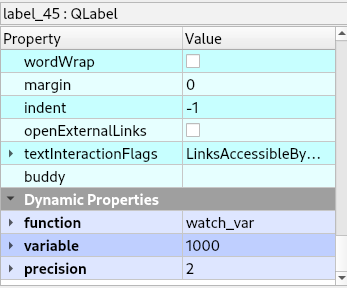
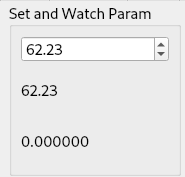

Parameters¶
Parameter values in the var file can be set and watched for changes.
Setting Parameters¶
To set a user parameter value in the var file with a QDoubleSpinBox add a couple of string type Dynamic Properties. See Dynamic Properties The parameters 31 - 5000 are available for use in NC code programs. Replace nnnn with the variable number.
function set_var
variable `nnnn`
The user parameter must be in the var file. On startup Flex reads the var file and sets the value of the QDoubleSpinBox to that value. When you change the value of the QDoubleSpinBox the var file is updated with the new value. There is a 0.5 second timeout before the var file is updated to give time to type in a number.
The configuration must be out of E-Stop, Power On and Homed before the QDoubleSpinBox is enabled.
Watching Parameters¶
To watch the value of a user parameter a QLabel can be used with the following string type Dynamic Properties. See Dynamic Properties
function watch_var
variable `nnnn`
The value is updated at startup and any time the var file is updated.
The default precision for a parameter value is 6, to change the precision add a Dynamic Property called precision and set the value to the number of digits after the dot.
Note
The var file is not updated until the end of a NC file.
Example of setting and watching parameters
